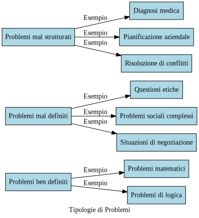

Luca: Vorrei discutere con te di problem solving, partendo da una definizione utile e sufficientemente generale di cos'è un problema: hai una proposta?
ChatGPT: Certamente! Un problema può essere definito come una situazione o un compito che richiede una soluzione o un'azione per passare da uno stato iniziale a uno stato desiderato, superando ostacoli o limitazioni. In altre parole, un problema si presenta quando c'è una discrepanza tra la situazione attuale e quella che vorremmo raggiungere, e occorre trovare un modo per colmare questa lacuna. Questa definizione è abbastanza generale da applicarsi a una vasta gamma di contesti, come quelli matematici, scientifici, sociali, organizzativi e personali.
Luca: Interessante... Puoi proporre una classificazione utile di tipologie di problemi, dal punto di vista del processo di ricerca di soluzione dei problemi stessi?
ChatGPT: Sicuro! Dal punto di vista del processo di ricerca di soluzione dei problemi, possiamo classificare i problemi in tre tipologie principali:
-- Problemi ben definiti: Questi problemi hanno una struttura chiara, con un obiettivo ben definito, uno stato iniziale e uno stato finale noti. Le regole per passare dallo stato iniziale allo stato finale sono anche chiaramente stabilite. Esempi di problemi ben definiti includono la maggior parte dei problemi matematici e molti problemi di logica.
-- Problemi mal definiti: A differenza dei problemi ben definiti, i problemi mal definiti presentano una struttura ambigua e possono mancare di un obiettivo chiaro, di uno stato iniziale o finale definito, o di regole per passare da uno stato all'altro. Questi problemi richiedono spesso un processo di chiarimento e riformulazione prima che possano essere risolti. Esempi di problemi mal definiti includono questioni etiche, problemi sociali complessi e alcune situazioni di negoziazione.
-- Problemi mal strutturati (o semi-strutturati): Questi problemi si collocano tra i problemi ben definiti e quelli mal definiti. Mentre alcuni aspetti del problema possono essere chiari, altri potrebbero essere ambigui o incerti. In questi casi, potrebbe essere necessario utilizzare un approccio misto, combinando tecniche di risoluzione di problemi ben definiti con metodi per affrontare l'ambiguità e l'incertezza. Esempi di problemi mal strutturati includono la diagnosi medica, la pianificazione aziendale e la risoluzione di conflitti.
Queste categorie aiutano a comprendere la natura dei problemi e a guidare il processo di ricerca di soluzioni adattandosi alle diverse situazioni.
Luca: Interessante. Riesci ora a organizzare questo in una mappa concettuale, includendo anche uno o più esempi specifici per ogni tipologia, e scrivendo la mappa in accordo a una sintassi formale che ne consenta la visualizzazione, per esempio a DOT per GraphViz?
ChatGPT: Ecco una mappa concettuale espressa nella sintassi DOT per GraphViz che rappresenta le tre tipologie di problemi e alcuni esempi specifici: digraph Problemi { label = "Tipologie di Problemi"; rankdir = LR; node [shape = box, style = filled, fillcolor = lightblue]; "Problemi ben definiti" -> "Problemi matematici" [label="Esempio"]; "Problemi ben definiti" -> "Problemi di logica" [label="Esempio"]; "Problemi mal definiti" -> "Questioni etiche" [label="Esempio"]; "Problemi mal definiti" -> "Problemi sociali complessi" [label="Esempio"]; "Problemi mal definiti" -> "Situazioni di negoziazione" [label="Esempio"]; "Problemi mal strutturati" -> "Diagnosi medica" [label="Esempio"]; "Problemi mal strutturati" -> "Pianificazione aziendale" [label="Esempio"]; "Problemi mal strutturati" -> "Risoluzione di conflitti" [label="Esempio"]; } Questa mappa concettuale mostra le tre tipologie di problemi come nodi principali e li collega ai rispettivi esempi specifici tramite archi etichettati con "Esempio". Per visualizzare questa mappa concettuale, copia il codice DOT in un file di testo con estensione ".dot" e utilizza un visualizzatore GraphViz, come l'applicazione dot o un servizio online come GraphViz Online, per generare un'immagine o un file vettoriale.
[questa mappa è stata generata con un editor grafico a partire dal codice sopra] 
Luca: Mi sembra un'ottima sintesi. Dato tutto ciò, se tu dovessi progettare ora un percorso di formazione al problem solving per, diciamo, ragazzi di 16 anni, come lo imposteresti?
ChatGPT: Un percorso di formazione al problem solving per ragazzi di 16 anni dovrebbe essere progettato per sviluppare le competenze fondamentali necessarie per affrontare una varietà di problemi in contesti diversi. Ecco una proposta di struttura per un tale percorso:
1. Introduzione al problem solving: Presentare ai ragazzi il concetto di problem solving, i diversi tipi di problemi (ben definiti, mal definiti e mal strutturati) e l'importanza di queste competenze nella vita quotidiana e nel mondo del lavoro.
2. Pensiero critico e creativo: Insegnare ai ragazzi come utilizzare il pensiero critico per analizzare e valutare informazioni e situazioni, e il pensiero creativo per generare idee innovative e soluzioni originali.
3. Tecniche e strumenti di problem solving:
a. Brainstorming: per generare rapidamente idee e soluzioni possibili.
b. Diagrammi di flusso e mappe mentali: per visualizzare e organizzare le informazioni e le relazioni tra i diversi elementi del problema.
c. Metodo scientifico: per testare ipotesi e verificare la validità delle soluzioni proposte.
d. Algoritmi euristici: per trovare soluzioni approssimate a problemi complessi.
e. Tecniche di decisione: come l'analisi costo-beneficio, l'elenco dei pro e contro e l'analisi multi-criterio, per valutare e scegliere tra diverse soluzioni possibili.
4. Lavoro di gruppo e comunicazione: Insegnare ai ragazzi come lavorare in gruppo per risolvere problemi, condividendo idee, risorse e responsabilità, e come comunicare efficacemente le loro soluzioni agli altri.
5. Riflessione e apprendimento continuo: Insegnare ai ragazzi l'importanza di riflettere sulle proprie esperienze di problem solving, per identificare i punti di forza e di debolezza, apprendere dai propri errori e migliorare continuamente le proprie competenze.
6. Progetti e casi studio: Far svolgere ai ragazzi progetti pratici e casi studio che richiedono l'applicazione delle competenze di problem solving apprese in situazioni reali o realistiche, in vari ambiti, come scienza, matematica, arte, storia, questioni sociali e situazioni di vita quotidiana.
7. Valutazione e feedback: Monitorare e valutare i progressi dei ragazzi nel problem solving, fornendo feedback costruttivo e suggerimenti per migliorare le loro competenze e prestazioni.
L'obiettivo di questo percorso di formazione dovrebbe essere quello di aiutare i ragazzi a diventare risolutori di problemi efficaci, flessibili e indipendenti, in grado di adattarsi e prosperare in un mondo in continua evoluzione.
Luca: Mi sembra un'ottima impostazione. Mi interessa in particolare la fase della valutazione: mi fai un esempio di un gioco che proporresti agli stessi ragazzi per accertare se hanno acquisito almeno un po' del mindset del problem solver, soprattutto in riferimento al processo di ricerca di soluzione di problemi non ben definiti?
ChatGPT: Un esempio di gioco che potrebbe essere utilizzato per valutare il mindset del problem solver nei ragazzi, soprattutto riguardo ai problemi non ben definiti, è il "Gioco dei Legami". Questo gioco mette alla prova la capacità dei partecipanti di stabilire collegamenti tra concetti apparentemente non correlati e di utilizzare il pensiero creativo e laterale per trovare soluzioni.
Ecco come funziona il gioco:
1. Preparazione: Prepara un set di carte con parole o immagini che rappresentano diversi concetti, oggetti o situazioni. Assicurati di includere una varietà di temi, come scienza, arte, storia, tecnologia, natura e vita quotidiana.
2. Distribuzione delle carte: Distribuisci un certo numero di carte (ad esempio, 5) a ciascun partecipante o gruppo di partecipanti. Le carte dovrebbero essere scelte casualmente dal set preparato.
3. Obiettivo del gioco: L'obiettivo del gioco è trovare un problema o una situazione in cui tutti i concetti rappresentati dalle carte distribuite siano coinvolti o correlati in qualche modo. I partecipanti devono lavorare insieme per trovare una soluzione al problema o una strategia per affrontare la situazione proposta.
Tempo: Stabilisci un limite di tempo per il gioco, ad esempio 15-20 minuti, per stimolare il pensiero rapido e la creatività.
4. Presentazione e discussione: Alla fine del tempo stabilito, i partecipanti presentano il loro problema e la soluzione proposta agli altri. È importante incoraggiare la discussione e il feedback tra i partecipanti per valutare la qualità delle soluzioni e l'efficacia del processo di problem solving.
Il "Gioco dei Legami" valuta la capacità dei ragazzi di affrontare problemi non ben definiti, richiedendo loro di utilizzare il pensiero creativo e laterale per stabilire collegamenti tra concetti diversi e di lavorare insieme per trovare soluzioni innovative. Questo gioco può essere adattato e modificato per soddisfare le esigenze e gli interessi specifici dei partecipanti e per aumentare o diminuire il livello di difficoltà.
Luca: Bene, grazie. In questo dialogo ho la sensazione che stiamo sottovalutando il valore della creatività: pensi che si possa insegnare a diventare sempre più creativi nella soluzione di problemi, e nel caso come?
ChatGPT: Sì, la creatività è un aspetto fondamentale del problem solving e può essere sviluppata e migliorata attraverso l'apprendimento e la pratica. Ecco alcuni suggerimenti su come insegnare e promuovere la creatività nella soluzione dei problemi:
1. Creare un ambiente di apprendimento aperto e stimolante: Un ambiente che incoraggia la curiosità, la sperimentazione e la condivisione di idee aiuta gli studenti a sentirsi liberi di esplorare nuovi approcci e a pensare fuori dagli schemi.
2. Insegnare tecniche di pensiero creativo: Introdurre gli studenti a tecniche come il brainstorming, la scrittura libera, la creazione di mappe mentali e l'uso di analogie o metafore per generare nuove idee e soluzioni.
3. Promuovere la riflessione e la consapevolezza: Insegnare agli studenti a riflettere sulle proprie esperienze e a riconoscere i propri schemi di pensiero può aiutarli a diventare più aperti a nuove idee e a sviluppare un mindset più creativo.
4. Incoraggiare la sperimentazione e l'apprendimento dall'errore: Gli studenti dovrebbero essere incoraggiati a provare nuovi approcci e a non temere l'errore, ma piuttosto a vedere l'errore come un'opportunità di apprendimento e crescita.
5. Collaborazione e diversità: Favorire la collaborazione tra studenti con diverse esperienze, competenze e prospettive può stimolare la creatività e portare a soluzioni più innovative.
6. Esercitazioni e progetti pratici: Proporre esercizi e progetti che richiedano l'applicazione di competenze creative e il pensiero laterale. Questo può includere problemi di tipo "rompicapo", progetti artistici o sfide di progettazione aperte.
7. Role models e storie di successo: Presentare agli studenti esempi di individui creativi e le loro realizzazioni può ispirarli e motivarli a sviluppare le proprie capacità creative.
8. Tempo e spazio per la creatività: Dare agli studenti tempo e spazio per esplorare le proprie idee e interessi, senza pressioni esterne o limitazioni eccessive.
Incorporando questi suggerimenti nel percorso di formazione al problem solving, si può aiutare gli studenti a sviluppare la loro creatività e a diventare risolutori di problemi più efficaci e innovativi.
Luca: Grazie per questa conversazione, da cui ho imparato non poco. Mi fai ora una sintesi delle cose più importanti su cui abbiamo dialogato?
ChatGPT: Sono felice che la nostra conversazione sia stata utile! Ecco una sintesi delle cose più importanti di cui abbiamo parlato:
1. Abbiamo definito un problema come una situazione o un compito che richiede una soluzione o un'azione per passare da uno stato iniziale a uno stato desiderato, superando ostacoli o limitazioni.
2. Abbiamo classificato i problemi in tre tipologie principali dal punto di vista del processo di ricerca di soluzione: problemi ben definiti, problemi mal definiti e problemi mal strutturati.
3. Abbiamo creato una mappa concettuale in sintassi DOT per GraphViz che rappresenta le tre tipologie di problemi e alcuni esempi specifici per ciascuna categoria.
4. Abbiamo proposto una struttura per un percorso di formazione al problem solving per ragazzi di 16 anni, che include l'introduzione al problem solving, il pensiero critico e creativo, tecniche e strumenti di problem solving, lavoro di gruppo e comunicazione, riflessione e apprendimento continuo, progetti e casi studio, e valutazione e feedback.
5. Abbiamo discusso un esempio di gioco, il "Gioco dei Legami", che può essere utilizzato per valutare il mindset del problem solver nei ragazzi, soprattutto riguardo ai problemi non ben definiti.
6. Infine, abbiamo parlato dell'importanza della creatività nel problem solving e abbiamo fornito suggerimenti su come insegnare e promuovere la creatività nella soluzione dei problemi.
Spero che queste informazioni ti siano state utili e che possano ispirare ulteriori riflessioni e approfondimenti sul problem solving e la creatività.
Luca: Vorrei inviare questa sintesi anche a un amico di San Francisco, che non parla bene l'italiano...
ChatGPT: Ecco la sintesi delle nostre discussioni tradotta in inglese:
1. We defined a problem as a situation or task that requires a solution or action to move from an initial state to a desired state, overcoming obstacles or limitations.
2. We classified problems into three main types from the perspective of the problem-solving process: well-defined problems, ill-defined problems, and ill-structured problems.
3. We created a conceptual map in DOT syntax for GraphViz that represents the three types of problems and some specific examples for each category.
4. We proposed a structure for a problem-solving training course for 16-year-olds, which includes an introduction to problem-solving, critical and creative thinking, problem-solving techniques and tools, teamwork and communication, reflection and continuous learning, projects and case studies, and assessment and feedback.
5. We discussed an example of a game, the "Linking Game," which can be used to assess the problem solver mindset in young people, especially regarding ill-defined problems.
6. Finally, we talked about the importance of creativity in problem-solving and provided suggestions on how to teach and promote creativity in problem-solving.
Spero che questa sintesi possa essere utile al tuo amico di San Francisco e ispiri riflessioni ed esplorazioni sul problem solving e la creatività.
Luca: Grazie. E mi proponi infine un titolo originale e creativo per rendere attraente ai ragazzi il percorso di cui abbiamo parlato?
ChatGPT: Certamente! Un titolo originale e creativo per il percorso di formazione al problem solving potrebbe essere: "Mission: Problem Solver - L'avventura della mente creativa". Questo titolo suggerisce un approccio dinamico e coinvolgente all'apprendimento, mettendo l'accento sull'aspetto avventuroso e stimolante del problem solving e sulla mente creativa dei partecipanti.
Luca: Ottimo: arrivederci.
ChatGPT: Arrivederci! È stato un piacere parlare con te. Se hai altre domande o bisogno di ulteriori informazioni in futuro, non esitare a chiedere. Buona fortuna con il tuo percorso di formazione al problem solving!